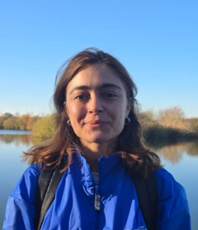
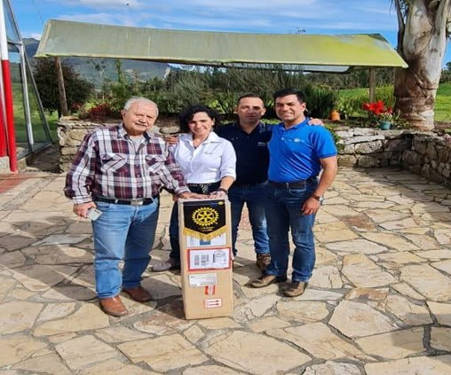

2025 — present
MSc, Water Management and Sustainable Development
IHE Delft, Netherlands
Digital Innovation & Hydroinformatics profile, Water Hazards and Climate Change track.

Civil Engineer — Hydraulic & Hydrological Modelling — MSc candidate, IHE Delft
I model water for a living: flood extents, flow frequencies, and the places where a river and a community disagree about where the water should go. Currently finishing an MSc in Water Management and Sustainable Development at IHE Delft, with a thesis on nature-based flood damage reduction carried out in affiliation with Deltares. Before Delft, I worked on the treatment side of water utilities in Colombia, monitored discharge and frequency curves across gauging stations for the Observatorio del Río Magdalena, and worked as an estimator in the US across curtain wall, HVAC and plumbing projects — which means I'm equally comfortable in a model and in a spreadsheet with a client on the other end of it.
Evaluating how nature-based interventions reduce flood damage in the Vecht Basin, Netherlands, using SFINCS and HydroMT-SFINCS under KNMI'23 climate scenarios, with SCS Curve Number runoff methods to link hazard to damage outcomes. Carried out with Deltares within the SpongeWorks project.
these notebooks were generalized and sensitive information was removed; they were developed with the help of Claude.
Built flood hazard and risk maps from HEC-RAS 1D model outputs for the July 2021 Kyll river flood, combining hydraulic results with land-cover-based vulnerability and damage indices in QGIS.
Monitored the discharge and frequency curves of the Magdalena River across gauging stations, with Python-based weekly flow and frequency reporting and statistical correlation analysis to support water management decisions along the river.
Installation of ultrafilters for drinking water in the rural town of San José, Colombia, in partnership with the Rotary e-Origen Club.

Reports for the utility on the aqueduct and potable water services.
Internship at the water utility entity of the Fundación.